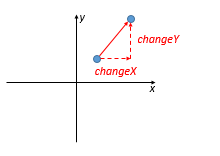

To practice changing the values of object properties, lets update the program from Exercise 1.4.1 to move one of the points on the line before calculating the slope.
By moving a point, we just mean adding values to the x and y position. For example, the following diagram shows a point being moved by the amount changeX and changeY:
Copy your folder from Exercise 1.4.1 to make a folder for this exercise (Exercise 1.4.2).
Add a function that moves a point object:
We will be using a single line from point (1, 2) to point (3, 4).
Update your test function (that calls the slope function) to move the first point (1, 2) by:
After the point has been moved, then calculate the slope.
Save your work, since you will need to submit it to schoology.
Head back to Schoology and add your HTML and Javascript files to the dropbox for Assignment 1.4.2.